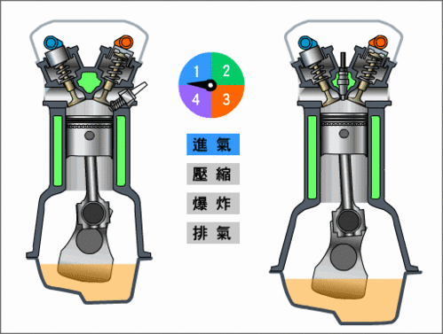
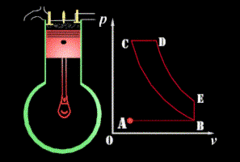
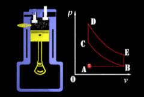

汽油机VS柴油机
能量：物质运动的一种度量。对应于物质的各种运动形式，能量也有各种形式，彼此可以互相转换，但总量不变。热力学中的能量主要指热能和由热能转换而成的机械能。我们汽车的发动机，正是将化石燃料中蕴含的化学能转化成机械能，从而推动汽车行驶。
内燃机的诞生。我们将其归为两类：奥托循环特性的燃气机和汽油机，狄赛尔循环特性的柴油机。现代燃气发动机基本等同于汽油机，缸内直喷汽油机虽结构有变化，但做功机制仍属奥托循环范围之内。为了方便解读，下文都称之为汽油机和柴油机。

说到发动机的原理，很多读者都会脱口而出：四冲程发动机分为吸气、压缩、做功、排气四个阶段。汽油机吸入混合气，然后压缩至上止点，火花塞跳火点燃混合气，燃烧做工把活塞推至下止点，随即向上排出废气；柴油机区别在于吸入纯空气，在上止点位置将柴油喷入被压缩的热空气内点燃做功。
但我们是否曾经疑问过，汽油机为什么要有火花塞？柴油机为什么不能喷入汽油？为什么说柴油机更有力，更省油但平顺性却不理想？好吧，小编在此文中用对比的方式，解读汽汽油机和柴油机的工作原理。
表面上看，两种热机在进气和燃料的引燃方式有着区别，虽然看起来都是烧油，发力，但就是在活塞处于顶端，燃烧的一霎那，几个毫秒之内发生的事儿，让两种机器有着不同的特质。这也就是小编经常提起的奥托循环和狄赛尔循环的差异。
 
两种循环工作状态和对应的p-v图 左侧为狄赛尔循环，右侧为奥托循环
两种循环的工作程序
我们先说左侧的奥托循环。如上图所示，p代表缸内压力，v代表缸内容积，A-B吸气冲程，活塞向下吸气，此时燃气的压强几乎保持不变；B-C绝热压缩冲程，活塞向上运动压缩，使气体压强增加，这时活塞对气体做功，消耗了机械能，增加了气体的内能（温度升高）；C-D等容燃烧过程，气体突然燃烧，压强激增，在这瞬间体积还来不及变化，所以可把它看作是等容变化，D-E绝热做功冲程，气体压强增加后作绝热膨胀推动活塞向下做功，同时消耗本身的内能转变为机械功，压强逐渐减小；E-B等容排气过程，做功冲程终了时，排气阀开放，气体压强突然降低而体积还来不及变化；B-A排气冲程，活塞由于惯性作用继续向上运动，同时排除废气，这时压强不变。
而作为等压燃烧的狄赛尔循环，C-D-E为做功冲程。第一阶段C-D为等压燃烧过程，柴油正在燃烧中，活塞在一定的压强下移动压强不变而容积增加，燃油一边推动活塞做功一边燃烧，D-E为绝热做功冲程。其他阶段同上。当然，图中p-v曲线是一种理想状态，实际工况有一定的差异，而作为乘用车的高速柴油机介于两种循环之间，燃烧过程分两个阶段，前半程为等容燃烧，后半程为等压燃烧，满足高转速同时也沿袭经典柴油机的特点。
你知道吗？柴油其实比汽油更容易引燃
汽油机与柴油机长期共存的理由，就是是因为有汽油和柴油两种燃料的存在，从而存在两种能把不同燃料充分发挥特性的内燃机。这看似废话，却也验证了那句“存在即是合理”。
汽油和柴油，都是由成分为碳和氢两种元素的烃类化合物组成的。汽油是由5-9个碳分子的烃类组成，而组成柴油的烃类的碳原子数则有10-20个，由于汽油分子比柴油要小，所以汽油的挥发性更好，燃烧速度也更快，但长链结构的柴油更容易被氧化，所以柴油自燃点要低于汽油。
柴油比汽油更容易引燃？看起来很难以理解，但这是事实。我们把烃类比作很常见的木头，那么汽油就好比一堆木屑，可以被吹散在空气中慢慢飘落，而柴油则好像牙签，怎样扔起来都会做自由落体运动；木屑用火柴很难点燃，但牙签很容易被点燃；但把木屑扔在火堆中，瞬间就化成一团火，而牙签至少可以烧几秒。
两种发动机不是简单的压燃与点燃的区别，这仅仅是开始
正是因为有了这些差异，两种发动机也有了区别和特性
·汽油比柴油挥发更快，所以汽油可以混合气状态在吸气行程进入气缸，而柴油不易挥发，不容易形成混合气，所以只能在做功行程开始前直接喷入缸内。
·柴油的自燃点比汽油更低，所以柴油可以在高温高压的汽缸中自燃；而汽油机如果采用压燃方式，就必须要有更高的压力，从而得到更高的温度才能点燃，但因为汽油容易挥发，挥发时又会吸收大量的热，这就再次增加了压燃的难度，所以用火花塞点燃是最适合的方式。
·汽油比柴油燃烧的更快，所以把汽油放在高温高压的环境下太威猛，机体受不了这种火药脾气，所以要降低气缸的压力，而用火花点燃时，缸内火焰是以“波”的形式蔓延燃烧，这也就避免了爆燃形成的冲击；而柴油在高温高压空气中，多处同时燃烧形成火焰，也就是以爆燃的方式（和汽油机的“爆震”相似）做功，工作状态比较粗暴，但因为柴油燃烧较慢，所以虽然燃烧的开始很剧烈，但燃烧时间还是要长于汽油机的。
题外话：此油门非彼油门
汽油机通过油门踏板改变节气门的开度，控制混合气进入汽缸的数量，以达到不同功率的输出；而柴油机控制功率输出完全依靠喷油的多少，是真正意义上的油门，取消了节气门，发动机进气就更充足，燃烧也就更充分，这也是柴油机热效率较高的原因之一。
同为2011款途锐，右侧柴油机最高为6000转，基本不可达到
而昨侧汽油机，6000转仅仅是红线开始
汽油机和柴油机优劣分析
汽油机内混合气体点燃后，瞬间燃烧，并爆发出能量，所以可以在单位时间内可以多次重复该循环，用高转速输出高功率，因而很小的体积，轻盈的体重，就能拥有较高性能和更快的响应速度，宽泛的转速区间也能够带来更好的操控感觉。但汽油机的压缩比往往只有柴油机的一半，做功行程时缸内温度和压力比柴油机低很多，所以热效率比较低，也就是俗称的“费油”。
柴油机喷入燃料后，燃烧需要一定的时间，所以适合较低转速下让燃油充分燃烧以带来大扭矩，而为了对抗气缸内高压和大扭矩，柴油机的汽缸和活塞的连杆等零件都要比汽油机强壮，所以较汽油机更笨重。但也正是柴油机因为高压缩比低转速的特性，能把热量更好的转化成动能，所以柴油机有着更好的热效率，也就是更好的油耗表现。这就是通常轿车和赛车使用汽油机，而公交车、卡车等大型车辆使用柴油机的原因。
为了适应柴油机工况，目前国内乘用车柴油机的缸体还都采用厚重的铸铁制造
柴油机现状
随着技术的发展，柴油机在平顺性和体积上都有很大改善，高强度的铝制缸体制造工艺，减轻了发动机的重量；废气后处理与颗粒物回收有效降低尾气污染；燃油高压共轨喷射以及较低压缩比（相对于传统柴油机）有效抑制噪声；平衡轴的应用提升了平顺性；VGT可变截面涡轮和中冷器提升了发动机功率，众多优良的设计逐渐装备于乘用车之上（点击进入：高效强劲环保 乘用车柴油机技术浅析），让柴油机有了可以和汽油机竞争的资本，而其较低的碳排放以及出色的低速扭矩，被众多SUV甚至轿车所接受。
在欧洲，柴油车在乘用车中的比重已经达到40%，而国内柴油机主要搭配在SUV车型当中，就在最近，国产自主品牌柴油轿车也已经上市。但目前国内的柴油品质还不够好，导致柴油机在国内未被重视。主要问题在于十六烷值不够高（燃烧性不好），硫含量过高（损害发动机零部件增加尾气污染），多环芳香烃过多（也就是杂质过多，燃烧不好会结焦积碳）等，假如中国柴油的品质可以提升的话，相信在飞涨的油价和日益恶化的环境面前，国人也会逐渐接受柴油车。
大众奥迪公用的3.0T涡轮增压柴油发动机，体重和汽油机相差无几功率与汽油机相比略逊一筹，但扭矩更为强大。